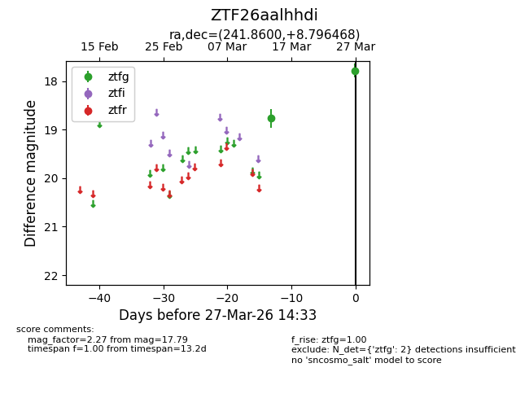
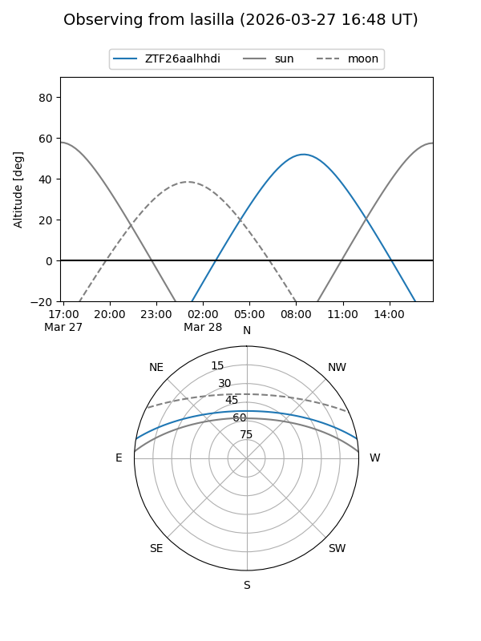
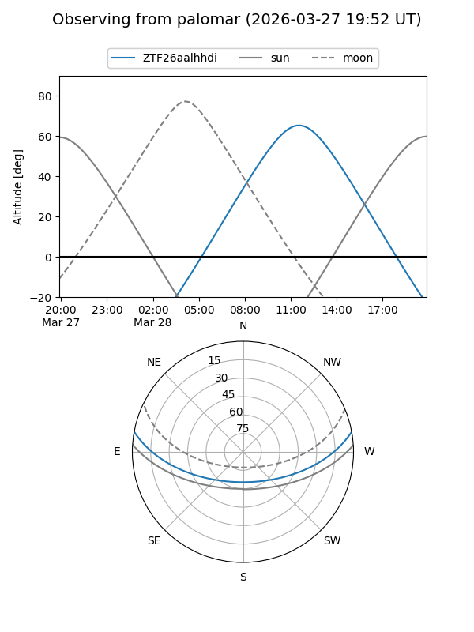

ZTF26aalhhdi
Target ZTF26aalhhdi at 2026-03-27 14:35
Aliases and brokers:
FINK: link
Lasair: link
ALeRCE: link
alt names
ZTF26aalhhdi (ztf,fink_ztf)
Coordinates:
equatorial (ra, dec) = 241.8600,+8.79647
equatorial (HMS+DMS) = 16:07:26.40,+08:47:47.29
galactic (l, b) = (20.8587,+40.29643)
Flags:
Photometry:
last ztfg=17.79
2 ztfg detections
Lightcurve

Visibility


Additional plots